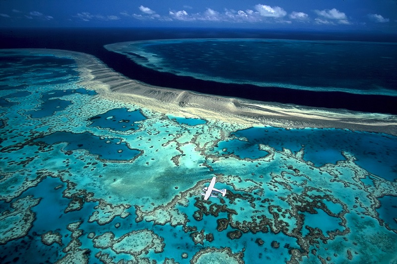
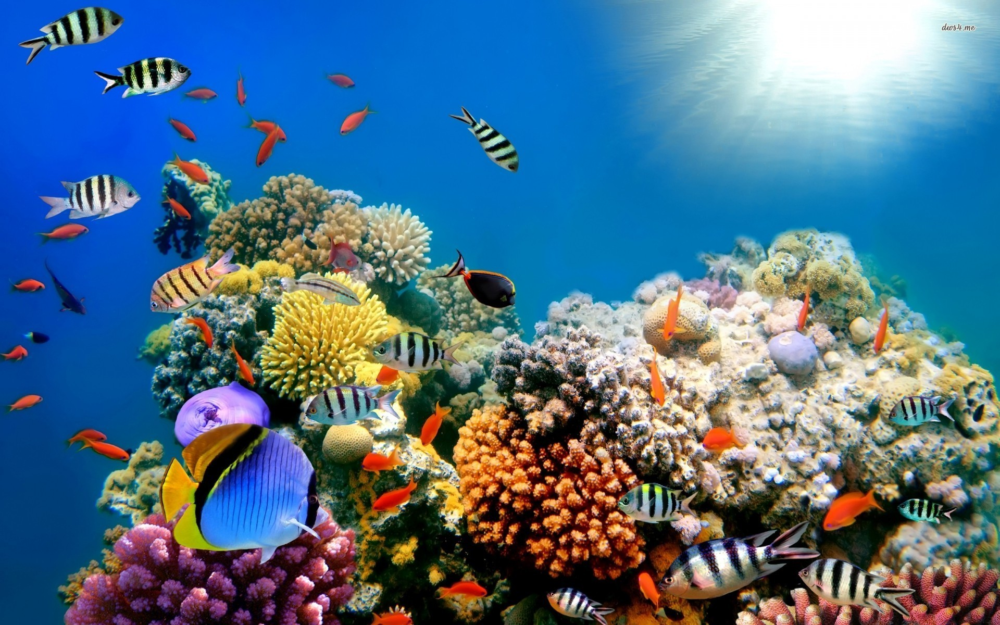

Большой Барьерные риф состоит из трёх тысяч рифов и девятисот прибрежных островов, и считается наибольшим на планете природным объектом, который создали живые организмы. Площадь его значительно превышает территорию Англии — парк рифов общей площадью почти в 344,5 тыс. км. кв. протянулся вдоль австралийского северо-восточного побережья на 2,5 тыс. км.
В основном парк расположен под водой и, по утверждению многих исследователей, на девяносто процентов до сих пор не изучен. При этом с юга он отдалён от материковой Австралии на 300 км, с севера — на 32 км.
Многие, побывавшие здесь, утверждают, что ни одна фотография, даже самого высокого качества, или фильм, отснятый с помощью наилучшей аппаратуры, не в состоянии полностью передать здешнюю красоту и царившую атмосферу тишины.
Под водой, на глубине более десяти метров, кораллы светятся фантастическими красками — можно насчитать несколько тонов зелёного, фиолетового,
красного цветов, а также чёрного, жёлтого, коричневого, горчичного и белого.
Сам по себе, Большой Барьерный риф или Национальный Парк рифов настолько велик, что составляет около десяти процентов от площади всех коралловых рифов планеты. Своим появлением парк обязан коралловым полипам (здесь обитает
более 400 видов самой разнообразной окраски) — малюсеньким животным со щупальцами, размером с рисовое зёрнышко. Существуют они вместе с одноклеточными водорослями, которые спрятались в середине их организма.